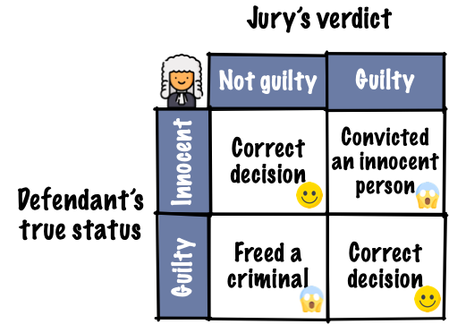
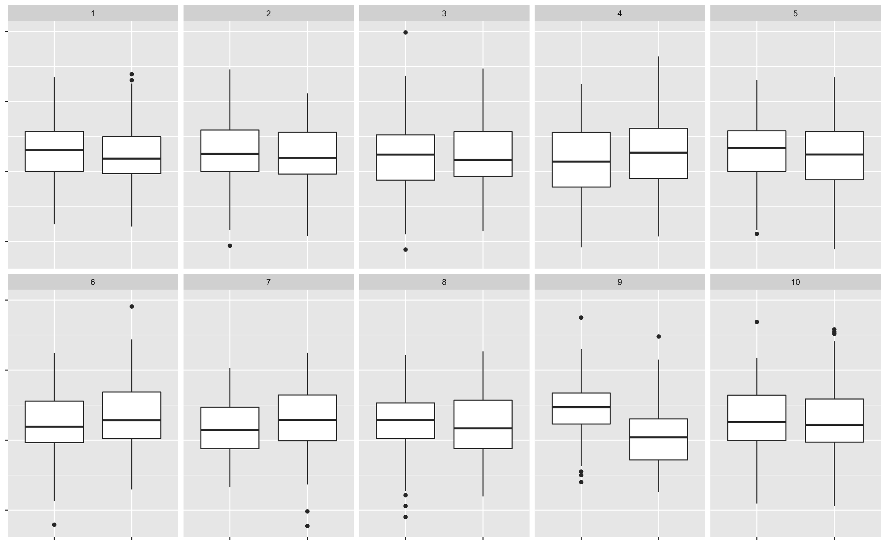
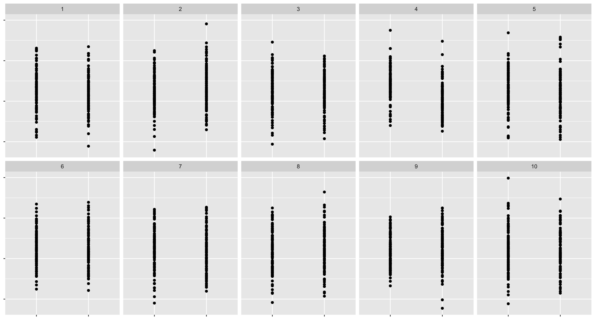
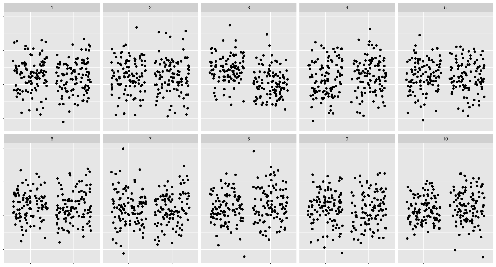
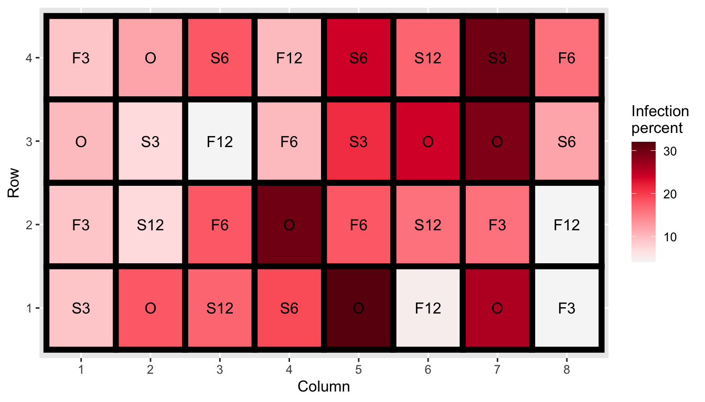
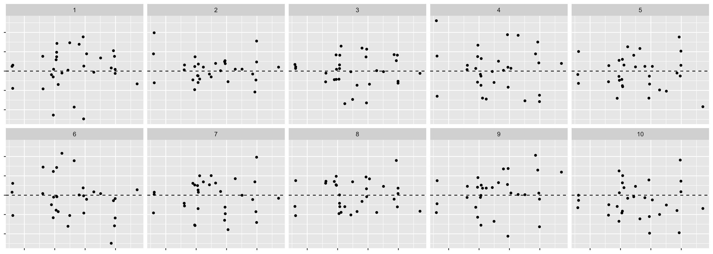

Chapter 10 Is what you see really there?
10.1 Revisiting hypothesis testing
set.seed(1)
head <- '<img src="images/Australian_Fifty_Cents_Obv.jpg" height = "50px" style="vertical-align:middle;">'
tail <- '<img src="images/Australian_50c_Coin.png" height = "50px" style="vertical-align:middle;">'10.1.1 Testing coin bias
- Suppose I have a coin that I’m going to flip

- If the coin is unbiased, what is the probability it will show heads?
- Yup, the probability should be 0.5.
- So how would I test if a coin is biased or unbiased?
- We’ll collect some data.
- Experiment 1: I flipped the coin 10 times and this is the result:
samp10 <- sample(rep(c(head, tail), c(7, 3)))
cat(paste0(samp10, collapse = "")) * The result is 7 head and 3 tails. So 70% are heads.
* Do you believe the coin is biased based on this data?
* Experiment 2: Suppose now I flip the coin 100 times and this is the outcome:
* The result is 7 head and 3 tails. So 70% are heads.
* Do you believe the coin is biased based on this data?
* Experiment 2: Suppose now I flip the coin 100 times and this is the outcome:
samp100 <- sample(rep(c(head, tail), c(70, 30)))
cat(paste0(samp100, collapse = ""))
* We observe 70 heads and 30 tails. So again 70% are heads.
* Based on this data, do you think the coin is biased?
10.2 (Frequentist) hypotheses testing framework
- Suppose \(X\) is the number of heads out of \(n\) independent tosses.
- Let \(p\) be the probability of getting a head for this coin.
| Hypotheses | \(H_0: p = 0.5\) vs. \(H_1: p \neq 0.5\) |
| Assumptions | Each toss is independent with equal chance of getting a head. |
| Test statistic | \(X \sim B(n, p)\). Recall \(E(X) = np\). The observed test statistic is denoted \(x\). |
| P-value .font_small[(or critical value or confidence interval)] |
\(P(\mid X - np\mid \geq \mid x - np\mid )\) |
| Conclusion | Reject null hypothesis when the \(p\)-value is less than some significance level \(\alpha\). Usually \(\alpha = 0.05\). |
- The p-value for experiment 1 is \(P(|X - 5| \geq 2) \approx 0.34\).
- The p-value for experiment 2 is \(P(|X - 50| \geq 20) \approx 0.00008\).
10.3 Judicial system
knitr::include_graphics("images/judicial-court.png")
knitr::include_graphics("images/statistical-court.png")
- Evidence by test statistic
- Judgement by p-value, critical value or confidence interval
- Does the test statistic have to be a numerical summary statistics?
10.4 Visual inference
- Hypothesis testing in visual inference framework is where:
- the test statistic is a plot and
- judgement is by human perceptions.
A residual plot after modelling high-density lipoprotein in human blood.
samples <- read_csv(here::here("data/HDLsamples.csv"))##
## ── Column specification ──────────────────────────────────────────────────────
## cols(
## HDL = col_double(),
## cholesterol = col_double(),
## trigylceride = col_double(),
## SPB = col_double()
## )fit <- lm(HDL ~ cholesterol + trigylceride + SPB, data = samples)
df <- augment(fit)
ggplot(df, aes(.fitted, .std.resid)) +
geom_point() +
geom_hline(yintercept = 0, linetype = "dashed") +
labs(x = "Fitted values", y = "Studentised residuals")
You (and many other people) actually do visual inference many times but generally in an informal fashion.
Here, we are making an inference on whether the residual plot has any patterns based on a single data plot.
Data plots tend to be over-interpreted
Reading data plots require calibration
10.5 Visual inference more formally
State your null and alternate hypotheses.
Define a visual test statistic, \(V(.)\), i.e. a function of a sample to a plot.
Define a null generating method to generate null data, \(\boldsymbol{y}_0\).
\(V(\boldsymbol{y})\) maps the actual data, \(\boldsymbol{y}\), to the plot. We call this the data plot.
\(V(\boldsymbol{y}_0)\) maps a null data to a plot of the same form. We call this the null plot. We repeat this \(m - 1\) times to generate \(m-1\) null plots.
A lineup displays these \(m\) plots in a random order.
Ask \(n\) human viewers to select a plot in the lineup that looks different to others without any context given.
State your null and alternate hypotheses.
Define a visual test statistic, \(V(.)\), i.e. a function of a sample to a plot.
Define a null generating method to generate null data, \(\boldsymbol{y}_0\).
\(V(\boldsymbol{y})\) maps the actual data, \(\boldsymbol{y}\), to the plot. We call this the .monash-blue[data plot].
\(V(\boldsymbol{y}_0)\) maps a null data to a plot of the same form. We call this the .monash-blue[null plot]. We repeat this \(m - 1\) times to generate \(m-1\) null plots.
A .monash-blue[lineup] displays these \(m\) plots in a random order.
Ask \(n\) human viewers to select a plot in the lineup that looks different to others without any context given.
Suppose \(x\) out of \(n\) people correctly identified the data plot from a lineup, then * the visual inference p-value is given as \[P(X \geq x)\] where \(X \sim B(n, 1/m)\), and * the .monash-blue[power of a lineup] is estimated as \(x/n\).
10.6 Uniformity trial of peanuts
ggplot(bancroft.peanut.uniformity, aes(factor(col), factor(row), fill = yield)) +
geom_tile(color = "black", size = 2) +
facet_wrap(~block) +
scale_fill_continuous_sequential(palette = "YlGn") +
labs(x = "Column", y = "Row", fill = "Yield")
ggplot(bancroft.peanut.uniformity, aes(yield)) +
geom_histogram() +
facet_wrap(~block) +
labs(x = "Yield")## `stat_bin()` using `bins = 30`. Pick better value with `binwidth`.
- Same peanut variety planted in Alabama field in two blocks of rectangular array of 18 rows by 6 plots.
- The yield (in pounds) is measured.
- Are the yields from the two blocks similar?
bancroft.peanut.uniformity %>%
group_by(block) %>%
summarise(Mean = mean(yield), SD = sd(yield)) %>%
knitr::kable(col.names = c("Block", "Mean", "Std. Dev"),
digits = 3) | Block | Mean | Std. Dev |
|---|---|---|
| B1 | 2.458 | 0.392 |
| B2 | 2.049 | 0.422 |
with(bancroft.peanut.uniformity,
t.test(yield[block=="B1"], yield[block=="B2"]))##
## Welch Two Sample t-test
##
## data: yield[block == "B1"] and yield[block == "B2"]
## t = 7.3979, df = 212.85, p-value = 3.149e-12
## alternative hypothesis: true difference in means is not equal to 0
## 95 percent confidence interval:
## 0.3004162 0.5186579
## sample estimates:
## mean of x mean of y
## 2.458148 2.048611- \(H_0: \mu_1 = \mu_1 \quad \text{ vs. } \quad H_1: \mu_1 \neq \mu_2\) where \(\mu_1\) and \(\mu_2\) are yield means of block 1 and 2, respectively.
- We choose our visual test statistic \(V_1\) as a side-by-side boxplots of yield by block.
- We generate the null data from \(N(\bar{y}, s^2)\) where \(\bar{y}\) and \(s\) are the sample mean and sample standard deviation of the yields.
library(nullabor)
set.seed(1)
method <- null_dist("yield", dist = "norm",
params = list(mean = mean(bancroft.peanut.uniformity$yield),
sd = sd(bancroft.peanut.uniformity$yield)))
lineup1 <- lineup(method, true = bancroft.peanut.uniformity, n = 10)## decrypt("bhMq KJPJ 62 sSQ6P6S2 um")lineup1 %>%
ggplot(aes(block, yield)) +
geom_boxplot() +
facet_wrap(~.sample, nrow = 2) +
theme(axis.text = element_blank(),
axis.title = element_blank())
# decrypt("bhMq KJPJ 62 sSQ6P6S2 um")
# kyuu- So \(x\) out of \(n\) of you chose the data plot.
- So the visual inference p-value is \(P(X \geq x)\) where \(X \sim B(n, 1/10)\).
- In R, this is
1 - pbinom(x - 1, n, 1/10)
# OR
nullabor::pvisual(x, n, 10)- The power of the lineup is given as
x/n
# OR (need to use development one)
# install.packages("devtools")
# devtools::install_github("dicook/nullabor")
tibble(pic_id = 1, id = 1:n,
response = 1, # dummy responses
detected = rep(c(0, 1), c(x, n - x))) %>%
nullabor::visual_power(10)What about if we change the visual test statistic?
lineup2 <- lineup1 %>%
mutate(.sample2 = factor(.sample, labels = sample(1:10)),
.sample2 = factor(.sample2, levels = 1:10))
ggplot(lineup2, aes(block, yield)) +
geom_point() +
facet_wrap(~.sample2, nrow = 2) +
theme(axis.text = element_blank(),
axis.title = element_blank())
# lineup2 %>% filter(.sample==9)
# yonWhat about this one?
lineup3 <- lineup1 %>%
mutate(.sample2 = factor(.sample, labels = sample(1:10)),
.sample2 = factor(.sample2, levels = 1:10))
ggplot(lineup3, aes(block, yield)) +
geom_jitter() +
facet_wrap(~.sample2, nrow = 2) +
theme(axis.text = element_blank(),
axis.title = element_blank())
# lineup3 %>% filter(.sample==9)
# san- For the scatter plot \(x_2\) out of \(n_2\) of you chose the data plot.
- So the visual inference p-value is \(P(X_2 \geq x_2)\) where \(X_2 \sim B(n_2, 1/10)\).
- For the jittered plot \(x_3\) out of \(n_3\) of you chose the data plot.
- So the visual inference p-value is \(P(X_3 \geq x_3)\) where \(X_3 \sim B(n_3, 1/10)\). So the power difference is \(100\times \left|\dfrac{x_2}{n_2} - \dfrac{x_3}{n_3}\right|\%\).
What if we change the null generating method so that instead we permute the block labels?
method <- null_permute("block")
lineup_v2 <- lineup(method, true = bancroft.peanut.uniformity, n = 10)## decrypt("bhMq KJPJ 62 sSQ6P6S2 u4")ggplot(lineup_v2, aes(block, yield)) +
geom_boxplot() +
facet_wrap(~.sample, nrow = 2) +
theme(axis.text = element_blank(),
axis.title = element_blank())
# decrypt("bhMq KJPJ 62 sSQ6P6S2 u4")
# nana10.7 Statistical significance and practical significance
set.seed(1)
sim <- tibble(id = 1:10000000) %>%
mutate(y = c(rnorm(n()/2), rnorm(n()/2, 0.001)),
group = rep(c("A", "B"), each = n()/2))
with(sim, mean(y[group=="A"]) - mean(y[group=="B"]))## [1] -0.001443504with(sim, t.test(y[group=="A"], y[group=="B"]))##
## Welch Two Sample t-test
##
## data: y[group == "A"] and y[group == "B"]
## t = -2.2819, df = 1e+07, p-value = 0.0225
## alternative hypothesis: true difference in means is not equal to 0
## 95 percent confidence interval:
## -0.0026833804 -0.0002036271
## sample estimates:
## mean of x mean of y
## 0.0001819234 0.0016254271- Notice here the real difference in the two groups is small (0.001) here.
- The two groups have a slightly different but the true difference is small, you might not care.
- The practical significance takes into account the effect size.
10.8 Statistical significance of the data plot
- Unlike conventional hypothesis testing, visual inference p-value depends on:
- the visual test statistic \(V\),
- the individuals’ visual perceptions,
- the number of \(K\) observers,
- the size \(m\) of the lineup, and
- the effect size.
- The concept of conventional p-value is difficult for those that are not trained in statistics.
- The lineup is easier to understand to both novices and experts.
10.9 Lineup of small effect difference
method <- null_permute("group")
# this takes too long with my computer
# let's just subset the data
lineup_v3 <- lineup(method, true = sample_n(sim, 10000), n = 10)## decrypt("bhMq KJPJ 62 sSQ6P6S2 7Z")ggplot(lineup_v3, aes(group, y)) +
geom_boxplot() +
facet_wrap(~.sample, nrow = 2) +
theme(axis.text = element_blank(),
axis.title = element_blank())
# decrypt("bhMq KJPJ 62 sSQ6P6S2 7Z")
# jyuuFor computational reasons, only 10,000 data points for each plot are used above.
10.10 Some considerations in visual inference
- In practice you don’t want to bias the judgement of the human viewers so for a proper visual inference:
- you should not show the data plot before the lineup
- you should not give the context of the data
- you should remove labels in plots
- You can crowd source these by paying for services like:
- If the data is for research purposes, then you may need ethics approval for publication.
10.11 Visual inference with the nullabor 📦
10.11.0.1 nullabor + ggplot2
- You can construct the null data “by hand” as you have done for Exercise 4 (d) in tutorial 9.
- You will then need to create null plots and then randomly place the data plot to present the lineup.
- You’ll need to know which one is the data plot so you can tell if viewer’s chose the lineup or not.
- The
nullaborpackage makes it easy to create the data for the lineup and you can useggplot2to construct the lineup.

- Experiment was conducted to investigate the effect of sulfur on controlling scab disease in potatoes.
- There were seven treatments in total: control plus spring and fall application of 300, 600 or 1200 lbs/acres of sulfur.
- Employs a completely randomised design with 8 replications for control and 4 replications for other treatments.
10.12 Potato scab infection
- We are testing \(H_0: \mu_1 = \mu_2 = ... = \mu_7\) vs. \(H_1:\) at least one mean is different to others.
- Here we don’t have to many observation per treatment so we can use a dotplot.
- For the method to generate null, we consider permuting the treatment labels.
method <- null_permute("trt")- Then we generate the null data, also embedding the actual data in a random position. .font_small[Make sure to
set.seedto get the same random instance.]
set.seed(1)
line_df <- lineup(method, true = cochran.crd, n = 10)## decrypt("bhMq KJPJ 62 sSQ6P6S2 ua")glimpse(line_df)## Rows: 320
## Columns: 5
## $ inf <int> 9, 12, 18, 10, 24, 17, 30, 16, 10, 7, 4, 10, 21, 24, 29, 12,…
## $ trt <fct> S3, F12, S3, F3, O, F3, F12, O, S12, F6, O, F6, S3, F3, O, F…
## $ row <int> 4, 4, 4, 4, 4, 4, 4, 4, 3, 3, 3, 3, 3, 3, 3, 3, 2, 2, 2, 2, …
## $ col <int> 1, 2, 3, 4, 5, 6, 7, 8, 1, 2, 3, 4, 5, 6, 7, 8, 1, 2, 3, 4, …
## $ .sample <dbl> 1, 1, 1, 1, 1, 1, 1, 1, 1, 1, 1, 1, 1, 1, 1, 1, 1, 1, 1, 1, …- The
.samplevariable has information of which sample it is. - One of the
.samplenumber belongs to the real data.
line_df %>%
ggplot(aes(trt, inf)) +
geom_point(size = 3, alpha = 1/2) +
facet_wrap(~.sample, nrow = 2) +
theme(axis.text = element_blank(), # remove data context
axis.title = element_blank())decrypt("bhMq KJPJ 62 sSQ6P6S2 ua")## [1] "True data in position 5"10.13 Black Cherry Trees

- Data measures the diameter, height and volume of timber in 31 felled black cherry trees.
- We fit the model
fit <- lm(log(Volume) ~ log(Girth) + log(Height),
data = trees)
fit_df <- trees %>%
# below are needed for lineup
mutate(.resid = residuals(fit),
.fitted = fitted(fit))- We are testing \(H_0:\) errors are \(NID(0, \sigma^2)\) vs. \(H_1:\) errors are not \(NID(0, \sigma^2)\).
- We will use the residual plot as the visual statistic.
- For the method to generate null, we generate residuals from random draws from \(N(0, \hat{\sigma}^2)\).
method <- null_lm(log(Volume) ~ log(Girth) + log(Height),
method = "pboot")- Then we generate the lineup data.
set.seed(2020)
line_df <- lineup(method, true = fit_df, n = 10)## decrypt("bhMq KJPJ 62 sSQ6P6S2 uT")
- We can have:
method = "pboot",method = "boot"ormethod = "rotate"
for different (and valid) methods to generate null data when fitting a linear model.
method <- null_lm(log(Volume) ~ log(Girth) + log(Height),
method = "boot") #<<- We can also consider using a different visual statisitc, e.g. QQ-plot to assess normality.
10.14 Temperatures of stars
- The data consists of the surface temperature in Kelvin degrees of 96 stars.
- We want to check if the surface temperature has an exponential distribution.
- We use histogram with 30 bins as our visual test statistic.
- For the null data, we will generate from an exponential distribution.
line_df <- lineup(null_dist("temp", "exp", list(rate = 1/mean(dslabs::stars$temp))),
true = dslabs::stars,
n = 10)## decrypt("bhMq KJPJ 62 sSQ6P6S2 ug")- Note: the rate in an exponential distribution can be estimated from the inverse of the sample mean.
## `stat_bin()` using `bins = 30`. Pick better value with `binwidth`.
10.15 Foreign exchange rate
- The data contains the daily exchange rate of 1 AUD to 1 USD between 9th Jan 2018 to 21st Feb 2018.
- Does the rate follow an ARIMA model?
data(aud, package = "nullabor")
line_df <- lineup(null_ts("rate", forecast::auto.arima), true = aud, n = 10)## Registered S3 method overwritten by 'quantmod':
## method from
## as.zoo.data.frame zoo## decrypt("bhMq KJPJ 62 sSQ6P6S2 um")ggplot(line_df, aes(date, rate)) +
geom_line() +
facet_wrap(~ .sample, scales = "free_y", nrow = 2) +
theme(axis.title = element_blank(),
axis.text = element_blank())